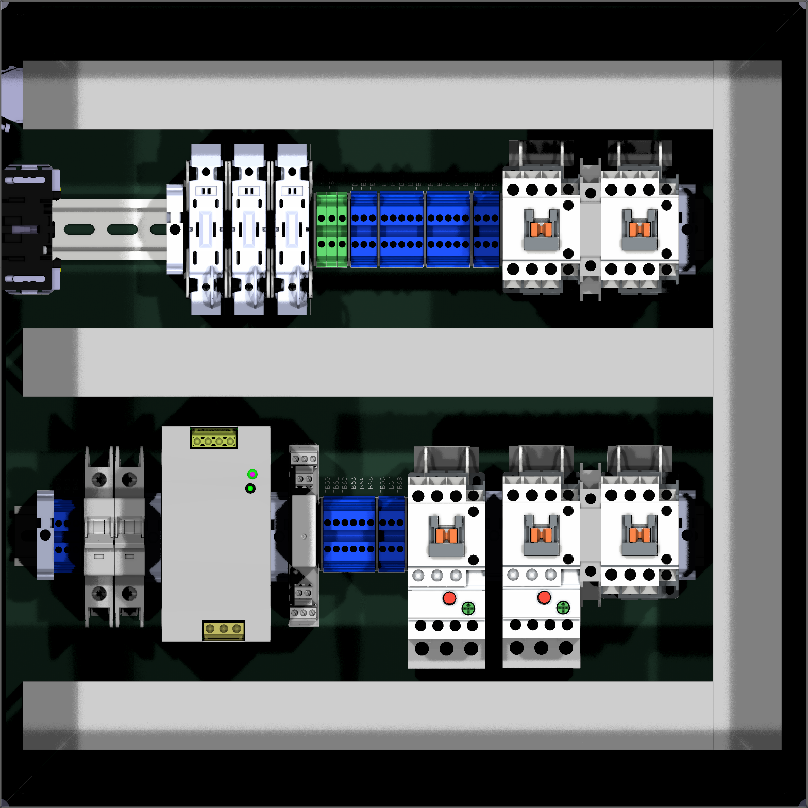

Saved snapshot reviewed on 2026-10-05 at 2026-10-05T10:25:29.910890-07:00. 85 footprints; 45 BOM rows; $1,269.14. All panel-mounted schematic components are present and all 85 models resolve at 1:1 scale. The main part counts are covered; the issues below remain.
Saved-file hardware completeness and nominal layout review. No schematic, PCB or BOM edits; not a drilling template or physical fit certification. Door is removed in the model. Closed-door hardware and conductor bend/service space need final assembly review.
Saved front envelope leaves about 16.8 mm between PS1 and the middle duct, versus the manufacturer’s 40 mm clearance above. The lowest assembly envelope has about 19.5 mm below; the 125.2 mm case has about 23 mm below (the mounting latch extends farther). separation from Q1 is 9.8 mm and from K3 is 10.46 mm. The two end brackets reserve roughly 10 mm of separation from neighboring devices. Shorten/split the duct locally, or rearrange PS1; moving the entire duct upward conflicts with upper-row hardware.
Your latest save moved the upper row upward and aligned cover and FH1 Y origins to 130 mm. This resolves the earlier 1 mm cover Y error and the earlier cover/duct collision. The cover envelope now has about 7.53 mm clearance to the middle duct. Cover X centers still use 25 mm pitch; exact CAD targets are (116.4715055,130), (140.984112312,130), (165.496719,130) mm. Corrections from current X=116/141/166 are +0.4715055/-0.0158877/-0.503281 mm. Model elevation and zero footprint transforms are correct. The fuses themselves are at Y=131, one millimeter below FH1; use Y=130 for their centers while retaining the previously selected 25 mm fuse pitch. Account for cover installation/removal and wire access; the included collision JSON documents the earlier placement, not a collision in this saved snapshot.
Six PCB pads retain NC1/BLK while the schematic specifies ESTOP_MID: J1 pins 2/3 and TB30/TB31 pins 1/2. Update PCB from the saved schematic while preserving placement. Native ERC reports zero violations.
End covers, jumper segments and top covers are on the BOM but absent as independent layout objects. Reserve 1.3 mm for each required KN-ECT6 end plate at the open end of a gray terminal assembly; the current groups largely abut the 2 mm separator envelopes. Separators are documented for bank segmentation; the review does not establish them as replacements for end covers. Eight bridge segments are identified below; one pack contains five 10-pole bars, sufficient in total poles if shortened as previously planned. Top cover stock is 25; if all 28 gray blocks are covered, three more are needed. KN-TC-1S is documented for the KN-T series, not as a PE-block accessory. KN-G12SP has no listed end cover and is bonded by its DIN clamping foot; do not apply KN-10J12 to that PE series.
J4 has six motor-lead pads, and the motor symbol has six electrical leads. The seventh cable conductor’s protective-earth path is not explicitly drawn. The three PE blocks provide six conductor terminals, matching the intended incoming PE, PS1, enclosure, door, backplate and motor connections. Allocate these six explicitly and establish the rail-to-bonded-panel path. Chassis Bonding Hardware is an Inventory placeholder, without lug/whip quantities or fastening details. Hammond provides an enclosure grounding stud and a door bonding stud.
The HMX1-BBREV kit, terminal labels, mounting feet and mounting fasteners are listed but not represented separately in the layout. Confirm the busbar installation on the intended reversing pair and its wire-access space; specify actual rail/duct/foot mounting fasteners and locations before using the panel drawing to fabricate.
Upper rail and FH1 center Y=130, but the terminals and fuses are at Y=131. Lower rail center Y=307.65, with parts scattered between Y=306.65 and 308.65. These are small visual/manual-grid shifts, but mounted parts should share the actual rail seating datum when used for fit validation. Suppressor pitch matches its contactor within 0.013258 mm in Y. OL1/OL2 are at relative (0,40) mm to their contactors, versus the recorded reconstructed nominal registration (-1.2,40.625); recheck mating fit on the hardware before treating the model as exact.
DRC results are itemized in the linked native JSON, including 155 unconnected items and six schematic parity findings. This file is a panel diagram with virtual wiring pads and no tracks; these are not demonstrated physical hardware defects. The 10 hole overlaps are suppressor/coil wiring targets; PE courtyards overlap while actual 5.75 mm blocks on 6 mm centers do not. Q1 and PS1 have recorded project-specific model offsets, so their library mismatch must not be blindly reset. All current model settings checked against model_alignment/settings.json match, and revised model hashes match that later registration record. The older zero-offset HMC validation record is superseded.
| Item | Required / placed | BOM stock |
|---|---|---|
| Power contactors | 5 / 5 | 5 |
| Interlocks | 2 / 2 | 2 |
| Coil relay | 1 / 1 | 1 |
| Overloads | 2 / 2 | 2 |
| Suppressors | 5 / 5 | 5 |
| Fuse holder | 1 / 1 | 1 |
| Fuses | 3 / 3 | 3 |
| Fuse covers | 3 / 3 | 3 |
| Feedthrough terminals | 28 / 28 | 50 (2 × 25) |
| PE terminals | 3 / 3 | 10 |
| Separators | 10 / 10 | 20 (2 × 10) |
| End brackets | 7 / 7 | 20 (2 × 10) |
| DIN rail | 2 / 2 | 1 four-piece pack in BOM; confirm UNIT EA denotes a pack |
| Wire duct 400 mm cuts | 4 / 4 | 2 × 1000 mm stock lengths; 1600 mm used before kerfs |
| Enclosure | 1 / 1 | 1 |
| Indicator | 1 / 1 | 1 |
| Disconnect | 1 / 1 | 1 supplier alias 6759K211 |
| M12 socket | 1 / 1 | 1 supplier alias DK_A125513-ND |
| Power gland | 1 / 1 | 5 |
| Motor gland | 1 / 1 | 5 |
| Controls gland | 1 / 1 | 5 |
Backplate is represented by Edge.Cuts and the PCB body. External motor, E-stop, speed switch, pendant and power plug appropriately have no panel footprints. Wiring and ferrules remain unquantified BOM placeholders.
Eight separate segments, 21 total poles. No bridge should cross to a different net. A practical allocation is bar 1: 5+3 poles; bar 2: 3+2+2; bar 3: 2+2+2, leaving two of the five stock bars spare, subject to the previously selected cutting method and insulation of cut ends.
| Blocks | Net | Poles |
|---|---|---|
| TB1–TB3 | +24V | 3 |
| TB10–TB14 | 0V | 5 |
| TB20–TB21 | +24V_CTRL | 2 |
| TB22–TB24 | +24V_RUN | 3 |
| TB30–TB31 | ESTOP_MID | 2 |
| TB60–TB61 | M1_T1 | 2 |
| TB62–TB63 | M1_T2 | 2 |
| TB64–TB65 | M1_T3 | 2 |

The native render crops the exterior gland extensions at this framing. Inventory confirms J3/J4/J5 at X=57/385/435, Y=485.241 mm, with model cable centerlines 75 mm from the enclosure back edge. All three model paths resolve.
Summary and input hashes · Full footprint inventory · ERC · DRC and parity · Cover / duct collision check